Découvrir le jeu
Règles de TRUTH
Présentation
TRUTH est un jeu de cartes où chaque joueur incarne une figure d'influence ou emblématique de la diffusion d'informations, avec ses propres objectifs et pouvoirs. Le but : accumuler le plus de points de diffusion.
Explication des règles en vidéo
Contenu de la boîte
- 8 cartes ID
- 90 cartes Action
- 36 cartes Event
- 40 cartes News
- 5 jetons Connaissance et 5 jetons Réputation
- 5 jetons bonus Event et 1 jeton lecteur Event
- 5 cartes mémo recto-verso
- 5 fiches de comptage des points
- 5 plateaux de jeu
Mise en place
Chaque joueur reçoit 5 cartes, un plateau, des jetons et une carte ID. La carte ID fixe des objectifs qui rapportent des points, ainsi qu'un pouvoir utilisable en fin de partie.
Déroulement d'un tour
Matin
Les joueurs replacent leurs jauges sur leurs plateaux selon les indications des cartes.
Après-midi
Chacun joue à son tour : cartes Personnage (augmentent les jauges de Réputation ou de Connaissance), cartes Interaction (bonus pour soi ou malus pour les autres) et cartes Support (piochez une News et liez-la à la carte Support, avec des effets selon sa nature).
Soir
Pause sans compétition. Le joueur ayant le jeton lecteur Event lit une carte Quiz et une carte Jeu. Ceux qui réussissent gagnent des bonus pour la suite.
Fin de partie et score
La partie s'arrête quand la pioche Event est épuisée. On multiplie la Réputation par les points des News (positifs ou négatifs), puis on ajoute les points des objectifs. Le joueur avec le plus de points de diffusion l'emporte.
Points : chaque True News rapporte 3 points de diffusion ; chaque Fake News fait perdre 1 point aux adversaires.
Le matériel
Cliquez sur une image pour l'agrandir.
Cartes ID
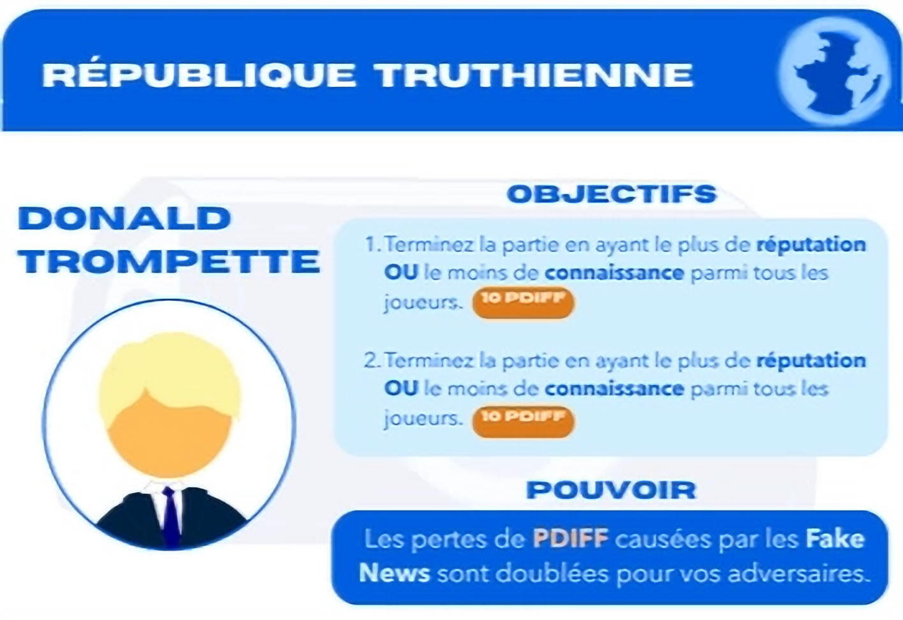
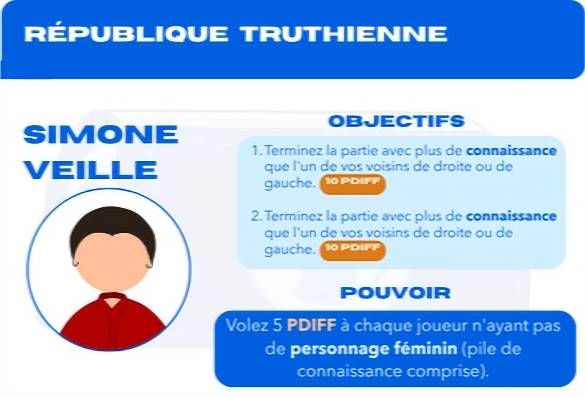
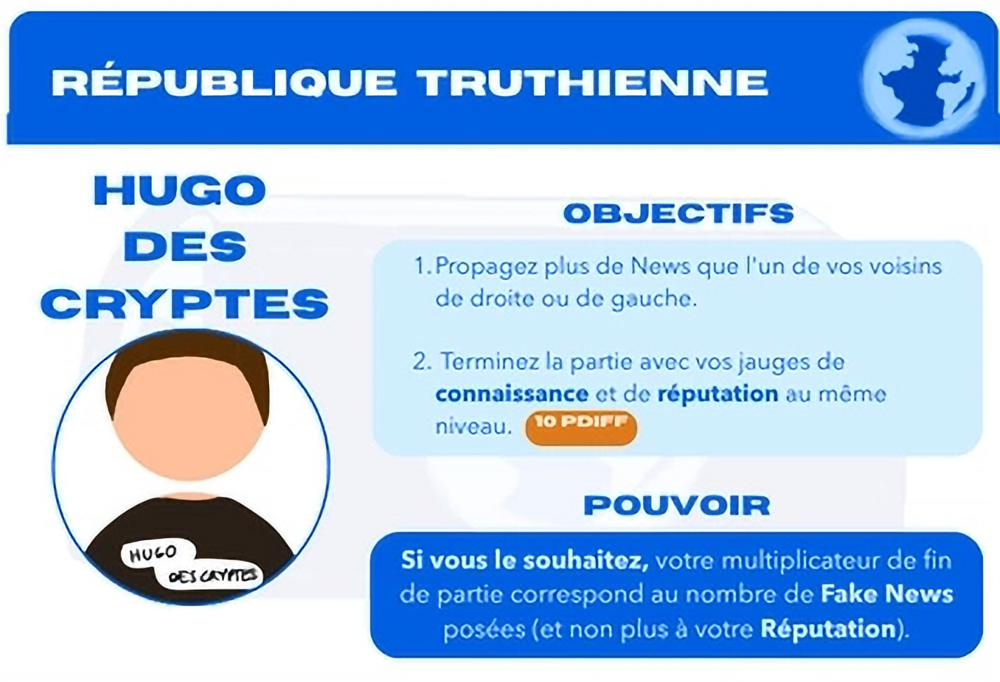
Cartes Action
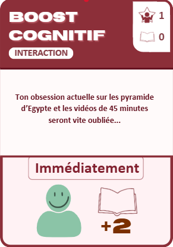
Cartes Event
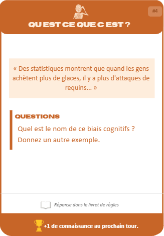
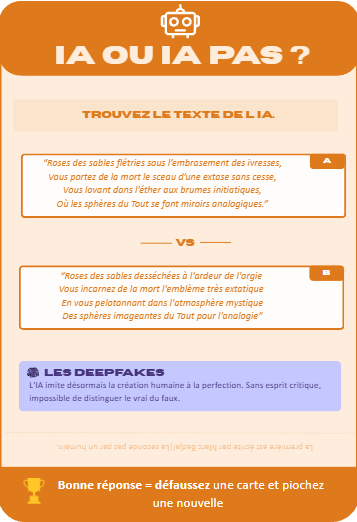
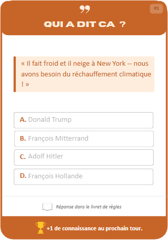
Cartes News
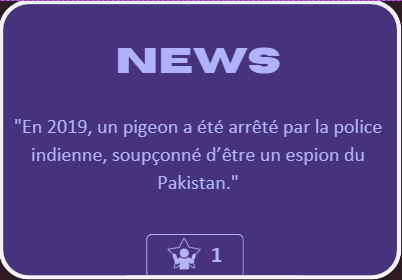
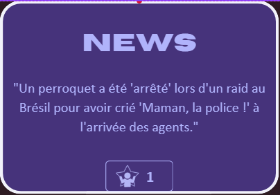
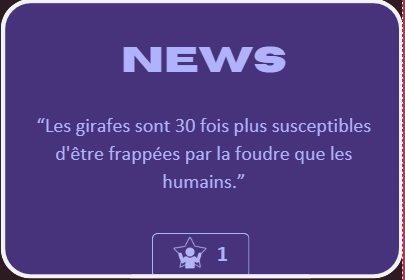
Jetons
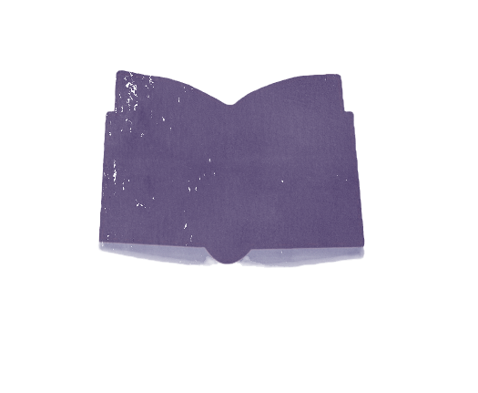
Plateau, mémo et personnages
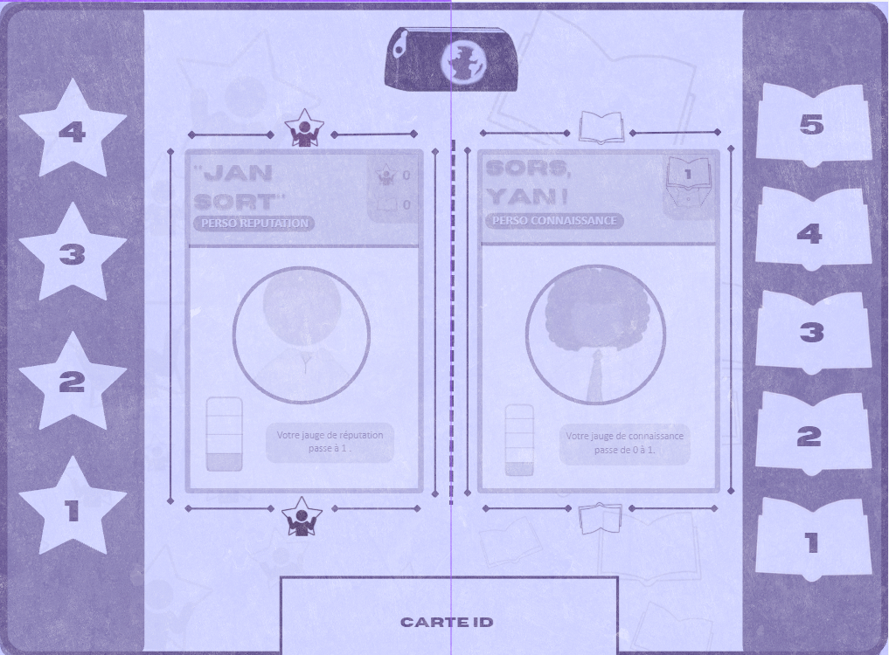
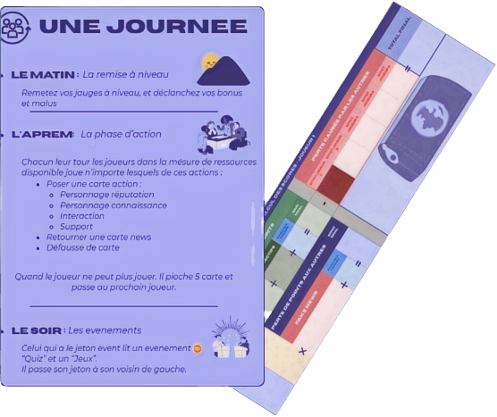
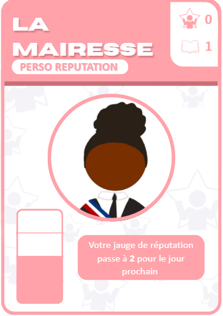
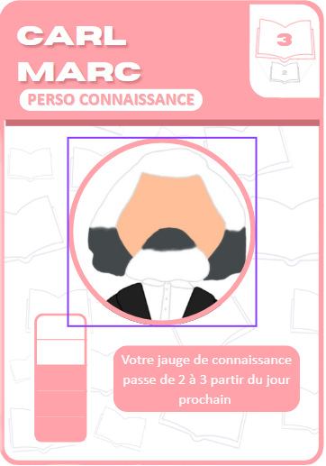